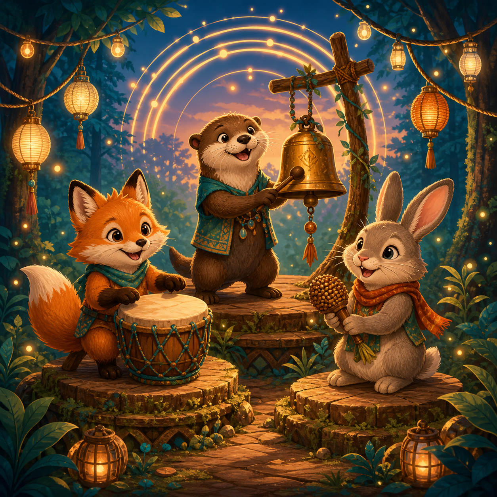

Forest festival · 6+
Animal Rhythm Relay
Tap the glowing station in time. Stay with the beat and build a combo.

Forest festival · 6+
Tap the glowing station in time. Stay with the beat and build a combo.
Watch the pulse, then tap the glowing station when its ring is full. Each tap advances the parade; accuracy grows your combo, but the round never ends on one missed beat.
Tap when the pulse reaches the gold band.
Festival finale